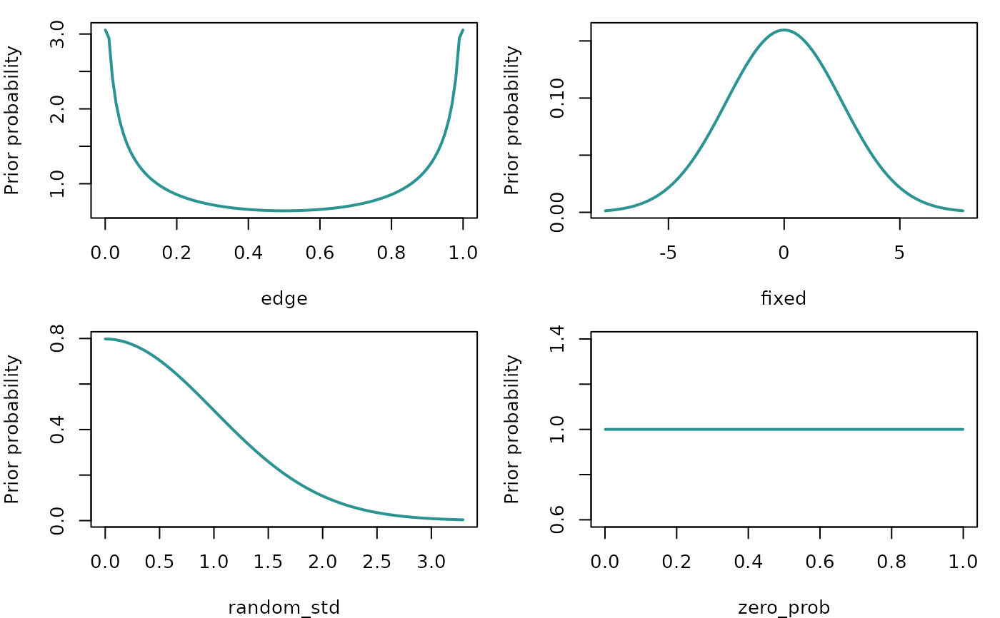

Plots the density of each prior in a list, to check that the priors give
reasonable weight to plausible values. Edge weight priors are shown on the
natural scale (probabilities for binary models, rates for count models); other
priors are shown on the scale on which they are defined. To see the data
implied by the priors together, use prior_predictive_check().
Arguments
- priors
List of priors for a model, as returned by
get_default_priors().- model_type
Type of model the priors will be used for, as in
get_default_priors().- type
Type of plot. Only
"density"is currently available.
Details
With partial_pooling = TRUE in bison_model(), the second value of
the edge prior is the scale of a half-normal prior on the spread of the edge
weights, so the edge prior shown here is not the implied prior on each edge.
Examples
priors <- get_default_priors("binary")
prior_check(priors, "binary")
